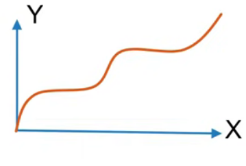
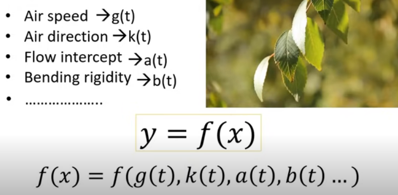

Ravindu Nethsara
27 May 2022


මොකක්ද මේ කලනය කියන්නේ? ඇයි අපි කලනය ඉගෙන ගන්නේ? අපි අද කතා කරමු ගණිතයේ එන ඉතා වැදගත් සංකල්පයක් වන කලනය ගැන. කලනය ගැන දැනගැනීමට පෙර මොහොතක් අපි ජීවත් වන ලෝකය දෙස හැරී බලමු. ලෝකයේ ස්වභාවය නිරන්තරයෙන් සෑම දෙයක්ම වෙනස්වීමයි. සුළඟට මල් සෙලවීම නිසා ඇතිවන මලේ ස්ථායි බව වෙනස්වීම, දිය පහරවල් ගලාගෙන යාම, බීජයක් සිටුවීමෙන් එය සුවිසල් දක්වා වැඩීම, ජීවින් වයසට යාම ආදී අපිට එදිනෙදා අත් විඳීමට සිදුවන සංසිද්දී කිහිපයකි. වෙනස් වීම ගණිතමය ලෙසට විමසා බැලීමේදී සෑම විටම වෙනස් වීමක් යනු එක්තරා භෞතික රාශියකට එරෙහිව තවත් භෞතික රාශියක් වෙනස් වීමයි. එනම් එය ශ්රිතයක් ලෙස දැක්විය හැකිය. මෙය කලනයේ මූලිකම සංකල්පය වේ. එනම් ලෝකයේ ඕනෑම වෙනස් වීමක් ශ්රිතයකින් නිරෑපණය කළ හැක. උදාහරණයක් ලෙස ගසක පත්රයක් සුළඟට සෙලවීමේදී කාලයට එරෙහිව විස්ථාපනය වෙනස්වීම දැක්විය හැකිය. මෙන්න මේ වෙනස්වීමේදී සිදුවන ප්රධානතම සිද්ධිය, වෙනස්වීමේ සීඝ්රතාව අඩු වැඩි වීමයි. ඉතින් යාලුවනෙ මේ සීඝ්රතාව සොයන්නේ කොහොමද? අවකලනය යොදා ගැනෙන්නෙ මේ අවස්ථාවෙදීය. වෙනස්වීමට අදාළ ශ්රිතය ගෙන අවකලනය කළ විට අපිට සීඝ්රතාව සොයාගත හැකිය.
දෙවැනි කාරණය, අනුකලනය. හිතන්න අපි ළඟ වස්තුවක ප්රවේගය පිළිබඳ ශ්රිතයක් තිබෙනම් එය අනුකලනය කිරීමෙන් ශ්රිතය යටවන වර්ගඵලය ලැබේ. එනම් වස්තුවේ විස්ථාපනය ලැබේ. ගසක පත්රයක සෙලවීම සලකා බලන්න. ඒ සඳහා නොයෙකුත් සාධක බලපායි. සුළඟේ වේගය, සුළඟේ දිශාව, පත්රයේ තෙතමනය ආදී කරැණු ඒබට වැටහේ. නමුත් මේ සියලු සාධක කාලයේ ශ්රිතයක් ලෙස දැක්විය හැකිය. උදාහරණයක් ලෙස කාලය සමඟ සුළඟේ දිශාව, සුළඟේ වේගය, පත්රයේ තෙතමනය වෙනස්වේ. එනම් මේ සියලු සාධක කාලයේ ශ්රිතයන් වේ.
මේ සම්බන්ධයන් මඟින් යාලුවනේ මොකක්ද අපිට ලැබෙන්නේ, අවකල සමීකරණයක් නේද? එය විසඳීමෙන් අපට ඒ පත්රයේ සෙලවීම විස්තර කළ හැකි ගණිතමය සම්බනධයක් ලැබෙනවා නේද? කලනය ඉගෙනීම ලෝකයේ සිදුවන ක්රියාවලි විස්තර කිරීමට මෙන්ම එමඟින් නව සංකල්ප ගොඩ නැඟීමට බොහෝ සෙයින් ප්රයෝජනවත්ය.
කතාවක් තියෙනවා විශ්වීය භාශාව ගණිතය කියලා. ඔව් ඒක යම් තාක් දුරට සත්ය වේ. ලෝකය දෙස බැලීමට ඇති ඇස ලෙස කලනය හැඳින්විය හැක. පාඨක ඔබටත් ආරාධනා කරනවා මේ සංකල්ප ඉගෙනගෙන ලෝකය දෙස නව කෝණයකින් බැලිමට.ඉතින් සහෟදයිනි එන්න ඉගෙන ගන්න ප්රායෝගිකව යොදවන්න. ස්තුතියි.
~මෙහි සඳහන් කරැණු කතිකාචාර්ය රැචිර විජේසේන මහතාගේ යූටියුබ් නාලිකාවෙන් උපුටා ගන්නා ලදී.~